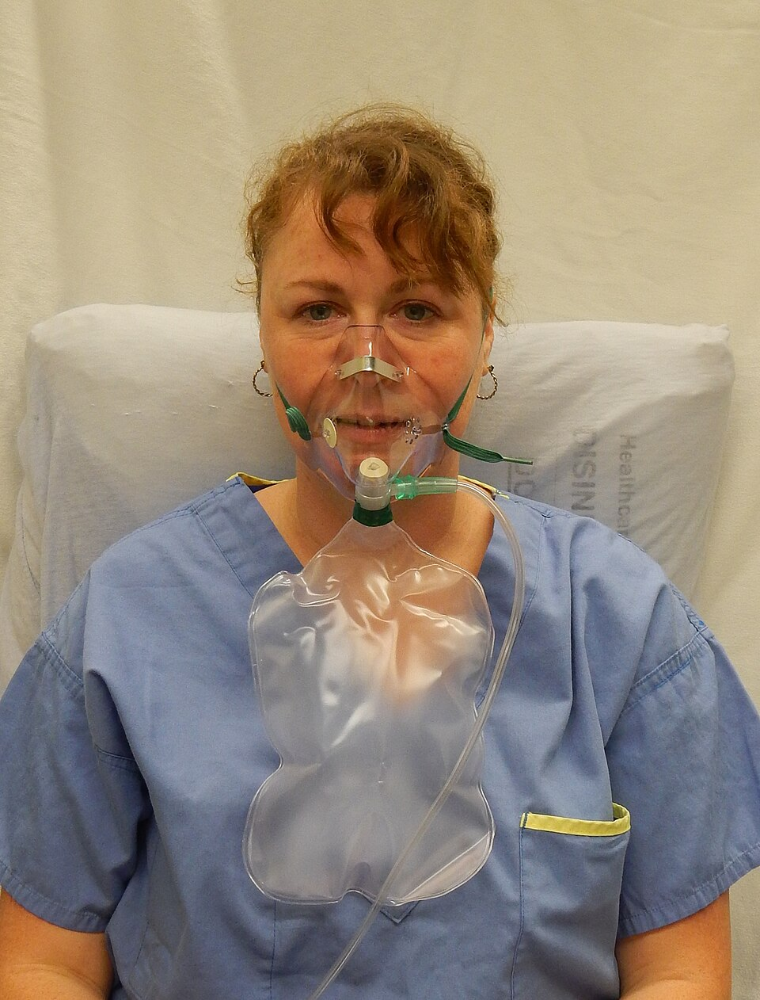

비재호흡마스크 (Non-Rebreather Mask)

쉽게 풀면
얼굴에 씌우는 마스크로, 아주 진한 산소를 공급하면서 내쉰 숨은 다시 안 들이마시게 해주는 기구이다.
예를 들어 얼굴에 씌우는 마스크 아래에 풍선처럼 부풀어 있는 저장백이 달려 있고, 그 안에 모인 진한 산소를 들이마시면서 내쉰 숨은 옆의 작은 구멍으로 빠져나가는 마스크를 떠올리면 된다.
왜 중요한가
비재호흡마스크는 비강캐뉼라나 단순 안면마스크보다 훨씬 높은 농도의 산소를 공급할 수 있어, 중증 저산소증이나 심각한 외상처럼 즉각적으로 높은 산소농도가 필요한 응급상황에서 필수적인 산소투여 기구로 다루어진다. 환자의 호흡 노력이 매우 약하거나 무호흡 상태에서는 마스크만으로 산소를 전달할 수 없어, 이 경우 백밸브마스크를 이용한 양압환기로 전환해야 한다는 적용 한계가 함께 다루어진다.
핵심 정리
- 저장백(약 1 L)에 산소를 모아 두고 흡기 때 마시며, 날숨은 일방향 밸브로 내보내 재흡입을 줄이는 안면 마스크이다.
- 사용 전 저장백을 분당 15 L 정도로 채워 약 2/3 이상 부풀린 뒤 씌운다. 한 번 숨 쉴 때마다 저장백 산소의 약 1/3이 쓰이고 공급 유량이 이를 채운다.
- 전달되는 산소분율(FiO₂)은 대략 60~90%이다. 일부 교재가 더 높은 값을 적지만 뒷받침하는 연구가 없다고 보고된다.
- 스스로 숨 쉴 수 있는 환자에게 쓴다. 자발호흡이 없으면 이 마스크만으로는 환기할 수 없다.
예시로 보기
- 적응 사례: 외상, 연기 흡입, 일산화탄소 중독 등 높은 농도의 산소가 필요하지만 호흡 보조는 필요 없는 경우이다.
- 저장백이 꺼지면 환자는 보충 산소를 잃는다.
- 대안: 폐쇄공포가 있거나 입 주변 손상이 있으면 비강캐뉼라나 블로우바이 산소가 낫다.
자주 하는 오해
- 완전히 밀폐된다: 제품에는 질식 방지를 위해 밸브 하나를 빼 둔 경우가 많고, 성인용 한 가지 크기라 얼굴에 잘 맞지 않아 실내 공기가 섞인다. 실제로 100%에 가까운 환자는 드물다.
- 마스크 = 호흡 보조: 산소 농도를 높일 뿐 환기를 대신하지 않는다. 환자가 숨을 쉬지 못하면 양압환기가 필요하다.
논문에서는 이렇게 쓰입니다
예시 문장
아래 예문은 용어의 쓰임을 보이려고 만든 것으로, 실제 논문 문장이 아니다.
저장백에 미리 산소를 채워두고 일방향 밸브로 호기가스 재흡입을 차단함으로써 비강캐뉼라보다 훨씬 높은 산소농도를 제공할 수 있다.
이 결과는 고농도 산소가 필요한 환자에서 기구 선택이 실제 산소화 개선에 영향을 미침을 보여주는 근거로 인용된다.
조금 더 깊게 보면
비재호흡마스크는 저장백이 충분히 부풀어 있어야 높은 산소농도를 유지할 수 있어 사용 전 저장백을 미리 채워야 하며, 일방향 밸브가 없는 단순안면마스크와 달리 호기가스의 재흡입을 방지한다는 점에서 구조적으로 구분된다. 밸브가 하나뿐인 마스크는 일부 호기가스가 저장백으로 역류할 수 있어, 완전한 비재호흡 구조는 저장백과 마스크 사이, 마스크 측면 배출구 모두에 일방향 밸브가 있는 제품에서만 구현되며 제품에 따라 밸브 수가 다르다는 점이 흔히 간과된다.
주의할 점
저장백이 완전히 부풀지 않은 상태로 사용하면 오히려 흡입 산소농도가 떨어질 수 있어, 사용 전 저장백 팽창 상태를 반드시 확인해야 한다.
참고 문헌
- Limmer, D., & O'Keefe, M. F. (2009). Emergency Care (11th ed.). Prentice Hall.
- Garcia, J. A., et al. (2005). The oxygen concentrations delivered by different oxygen therapy systems. Chest, 128(4).
- Wikipedia contributors. (n.d.). Non-rebreather mask. In Wikipedia, The Free Encyclopedia.